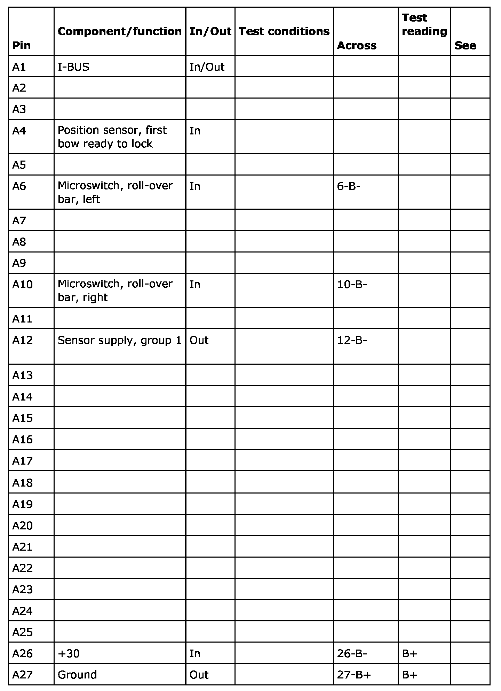
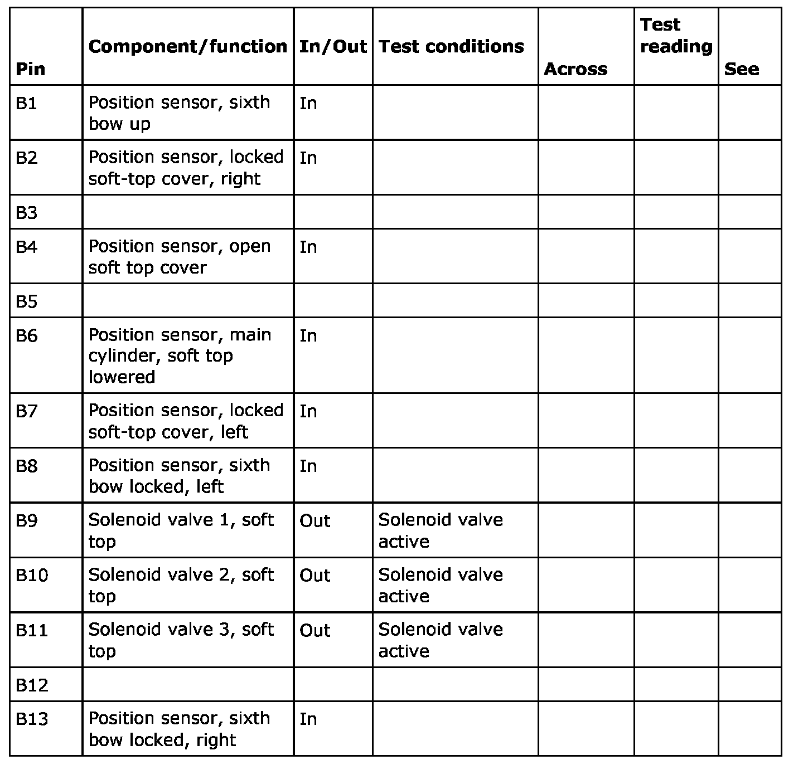
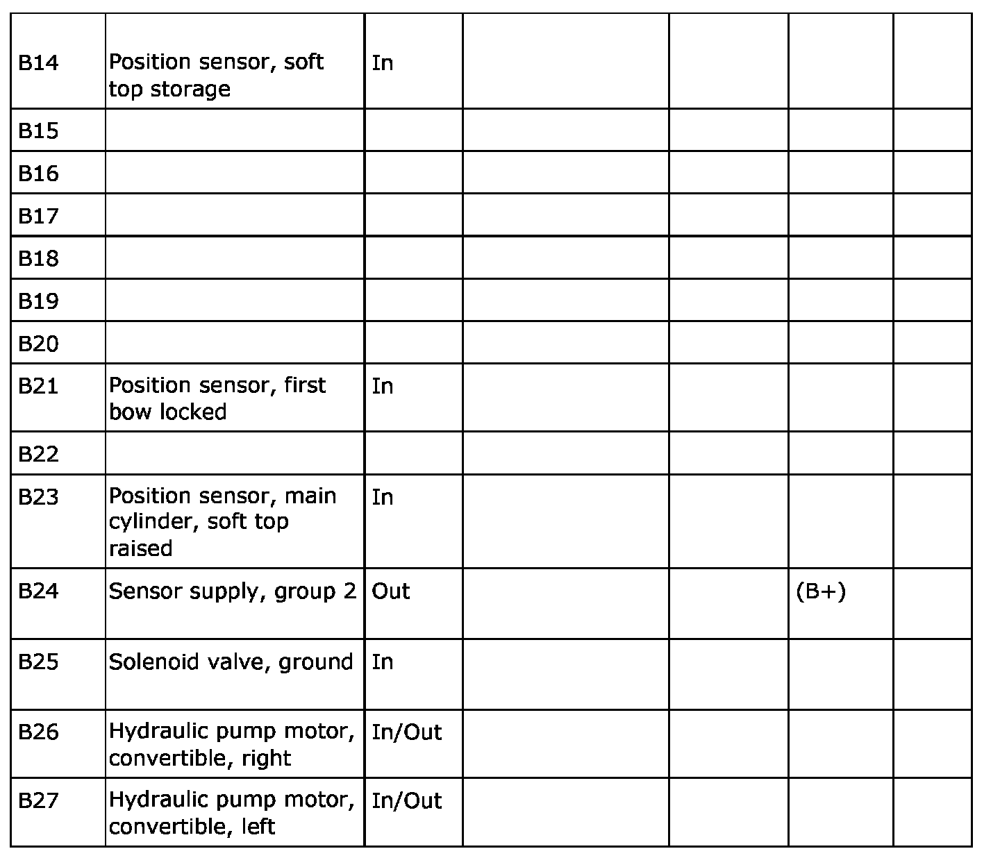

Pinout Values and Diagnostic Parameters
Test Readings, STC Control Module
Keep in mind:
- Note the test conditions and use common sense when assessing the test result.
- Check first that the control module is receiving power and is grounded. Then check all the sensor inputs and signals from other systems. Finally, check the control module outputs. Remember that test values will not indicate whether the actuator is working.
- If any reading is not OK, consult the wiring diagram to trace the leads, connectors or components which should be checked more thoroughly.
- The indicated values refer to calibrated Fluke 88/97.
- The test readings show the signal pulse ratio and pulse width respectively. A test instrument with pulse ratio or pulse width measurement must be used.


